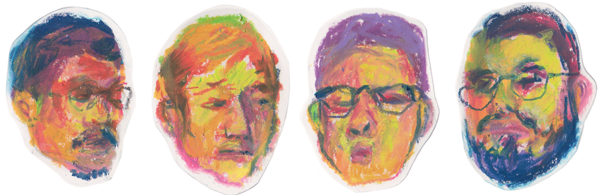

diving in
álbum e merch,
viena 2024.


Diving In é o mais recente EP da banda indie vienense Painting Clouds e eu fiz o design do álbum e alguns produtos para o concerto de lançamento a 20 de fevereiro no Kramladen em Viena.
Existem duas capas alternativas a pastel de óleo que podem ser tocadas virando o booklet ao contrário, assim como alguns outros elementos que foram usados para as t-shirts, autocolantes, postais e posters virtuais.
